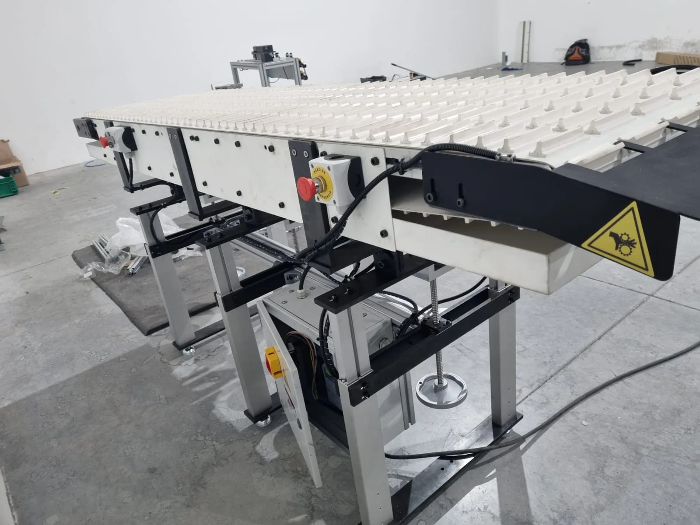

MOD-01 // MEC
Diseño Mecánico
Diseño de estaciones de trabajo, modelos 3D, análisis de elemento finito y selección de materiales.
EspecificacionesAUTOMATIZACIÓN E INGENIERÍA INDUSTRIAL
Desarrollamos estaciones de trabajo, maquinados de precisión e integración de control a la medida de las líneas de producción en México.

Integramos diseño mecánico, manufactura, sistemas eléctricos/neumáticos y control para responder a los retos reales de la industria.
ESPECIALIDADES TÉCNICAS
Cuatro áreas de ingeniería conectadas bajo un mismo estándar técnico para desarrollar soluciones prácticas y precisas.
Diseño de estaciones de trabajo, modelos 3D, análisis de elemento finito y selección de materiales.
Especificaciones
Maquinado CNC, torno y fresa convencional, soldadura y rectificado de piezas metálicas y plásticas.
Especificaciones
Ingeniería eléctrica, armado de gabinetes de control e integración de sistemas y pruebas neumáticas.
Especificaciones
Integración de hardware y software, programación de PLC multimarca y robótica industrial.
EspecificacionesMETODOLOGÍA LLAVE EN MANO
Ejecutamos todo el ciclo de ingeniería en Querétaro: desde el levantamiento y modelado CAD hasta el maquinado propio y programación en planta.
Análisis de requerimientos en línea de producción, definición de alcances, ergonomía y tiempos de ciclo.
Modelado 3D de estaciones y herramentales, validación por elemento finito (FEA) y selección de materiales.
Fabricación en nuestro taller de Querétaro: maquinado CNC, torno, fresa, soldadura MIG/Arco y rectificado.
Armado de gabinetes eléctricos, potencia neumática, pruebas de estanqueidad y programación de PLC/Robots.
Instalación en planta del cliente, pruebas funcionales, ajuste de secuencias y entrega operativa.
SOBRE ICAP INGENIERÍA
ICAP Ingeniería nació en Querétaro en 2016 para ofrecer soluciones prácticas, concretas y eficientes a la industria. Nuestro trabajo reúne automatización de procesos e innovación tecnológica.
Conoce nuestra historia, misión y calidadEVIDENCIA EN PLANTA
Un vistazo a nuestras estaciones automatizadas, equipos de proceso e instalaciones en Querétaro.
Ver galería completa (6 fotos)
